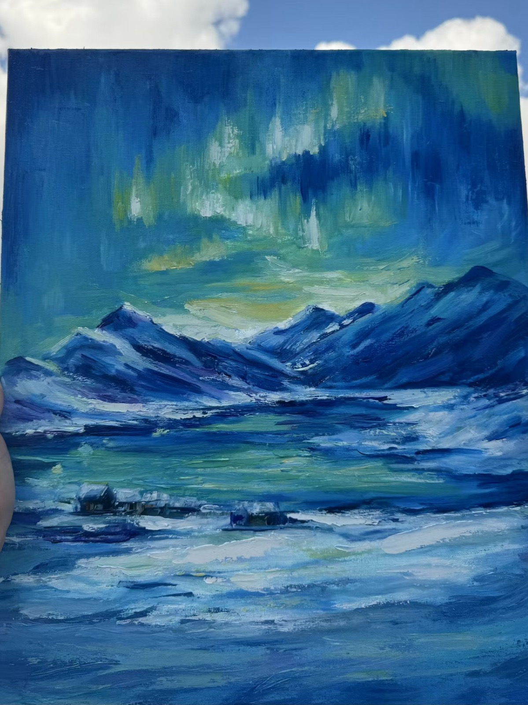

Hello there! I am a first-year Master's student in Computer Graphics and Game Technology at the University of Pennsylvania. I'm a graphics engineer & technical artist proficient in C++, Python, and shading languages with game development experiences. When I'm not coding, you'll probably find me playing games (of course), painting, snowboarding, scuba diving, or capturing moments through photography.
